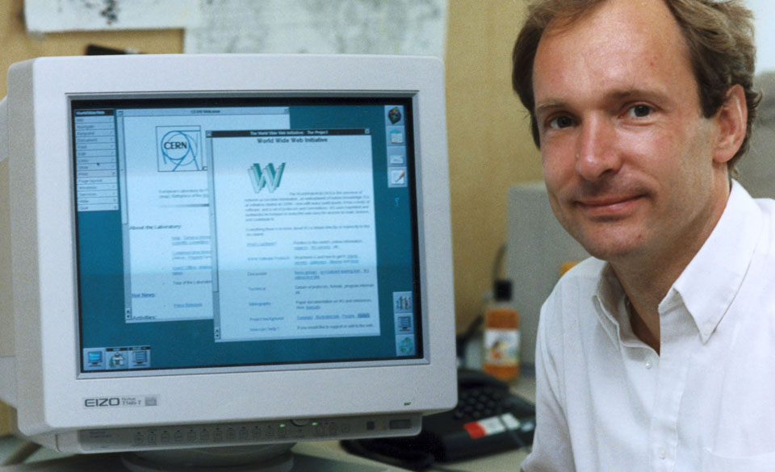

Dwight Eisenhower- American politician and Army general who served as the 34th President of the United States from 1953 until 1961.

Sputnik the first artificial satellite launched into space.


ARPA - (Advanced Research Project Agency) later DARPA (defense)


"The Internet as we know it really got started in the early 1960s. That was when J.C.R. Licklider — a computer scientist with technology company Bolt, Beranek and Newman
(BBN) — formulated a few unique ideas about global networking in a series of memos, describing an "Intergalactic Computer Network."
His idea: link computers together across the globe; and anybody near a computer could share information. As it turns out, Licklider had the right idea at the right time.
The Cold War had the United States searching for a communication network that could survive a nuclear attack."
Quote taken from Livescience.com

Tim Berners-Lee developed the first HTML (Hypertext Markup Language) in 1989
(Published text has always been marked up so that the author and publisher would be able to synchronize and layout a publication the way it has been envisioned. TBL created a markup language that tells a web browser how to visually display a page the way the “author” envisioned it.)

mark
There have been many versions of HTML. We are currently in HTML5.